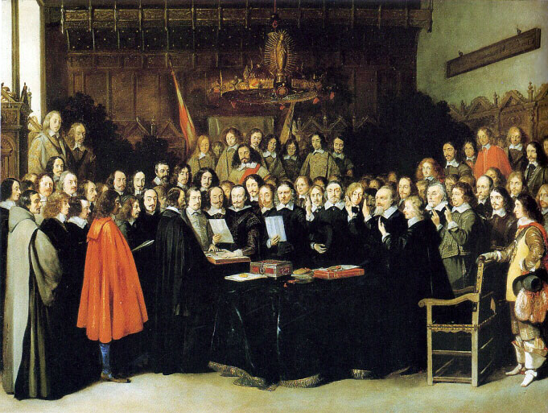
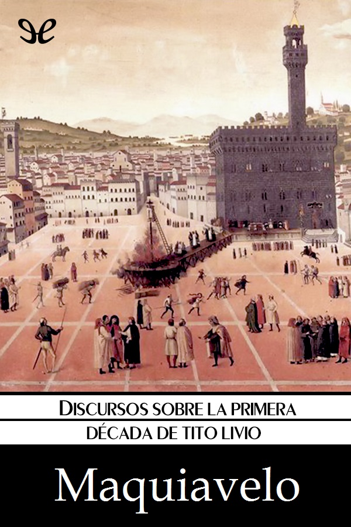

|
Inicio | Politica | El Príncipe | Contacto |
Aunque nunca lo dijo, se le atribuye la frase el fin justifica los medios, ya que resume muchas de las ideas contenidas en el capítulo XVIII de El príncipe: solo el resultado justifica la acción, siendo además el creador del concepto de la razón de Estado, fundamental en Política, y que se encuentra ulteriormente en Guicciardini y Giovanni della Casa, aunque solo con Giovanni Botero se desarrollará como doctrina (Della Ragion di Stato, 1589). Maquiavelo lo expone en sus Discursos sobre la primera década de Tito Livio (lib. III, cap. 41): "Que la patria se debe defender siempre con ignominia o con gloria, y de cualquier manera estará defendida"
Se considera a Maquiavelo como uno de los teóricos políticos más notables del Renacimiento, pues con su aporte se abre camino a la modernidad en su concepción política y a la reestructuración social. Decía que "si una persona desea fundar un estado y crear sus leyes, debe comenzar por asumir que todos los hombres son perversos y que están preparados para mostrar su naturaleza, siempre y cuando encuentren la ocasión para ello.
Tradicionalmente, se ha encontrado una aporía en el pensamiento maquiaveliano como consecuencia de la difícil conciliación de sus dos obras principales,
los Discursos sobre la primera década de Tito Livio y El príncipe.
En los Discursos, Maquiavelo se declara partidario de la república, partiendo del supuesto de que toda comunidad tiene dos espíritus contrapuestos: el del pueblo y el de los grandes (que quieren gobernar al pueblo), que están en constante conflicto. Para Maquiavelo el mejor régimen es una República bien organizada (toma como ejemplo la República romana), aquella que logre dar participación a los dos partidos de la comunidad para de esta manera contener el conflicto político dentro de la esfera pública.
Maquiavelo señala, y de aquí la calificación de bien organizada, que es primordial que en dicha república se disponga de las instituciones necesarias para canalizar el conflicto dentro de las mismas sin las cuales la república se desarmaría. Ninguna de las otras formas de gobierno, ya sean las buenas; la monarquía, la aristocracia y la democracia, o las malas; la tiranía, la oligarquía y el gobierno licencioso, logran el equilibrio de los partidos dentro del régimen, por lo que son inestables.
Los intérpretes proclives a las tesis republicanas han pretendido, desde Rousseau, conciliar la contradicción entre los Discursos y El príncipe considerando que este último supone un ejercicio de ironía que sencillamente desnudaba a la luz pública lo que eran las verdaderas prácticas del poder. Sin embargo, sobre la oposición a la república que podría inferirse en El príncipe, debe tenerse en cuenta que cuando Maquiavelo lo escribe lo hace para mostrar a Lorenzo II de Médici cómo debe desempeñarse si es que quiere unificar Italia y sacarla de la crisis en la que se encuentra. Maquiavelo aclara también que puede existir un hombre cuya virtud política (saber aprovechar los momentos de fortuna y escapar de los desfavorables) supere a la república en conjunto pero dicha virtud política morirá con el mortal que la posea, cosa que no ocurriría en una república bien organizada. Además de esto, debe recordarse que El príncipe presenta analogías con la figura romana y republicana del dictador, investido de poderes absolutos durante un breve período y teniendo que rendir cuentas posteriormente ante la república. En este sentido, la contradicción entre los dos textos principales de Maquiavelo no es tal. Si es así, entonces el principado y la república deberían ser entendidos como formas de gobierno subordinadas a la auténtica preocupación política de Maquiavelo: la formación de un Estado moderno en la Italia de su tiempo.